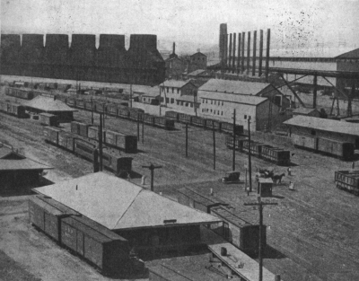
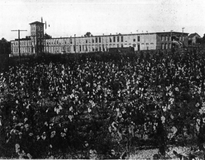
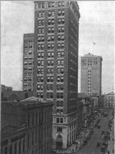
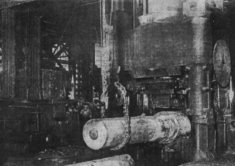

THE POLITICAL AND ECONOMIC EVOLUTION OF THE SOUTH
The outcome of the Civil War in the South was nothing short of a revolution. The ruling class, the law, and the government of the old order had been subverted. To political chaos was added the havoc wrought in agriculture, business, and transportation by military operations. And as if to fill the cup to the brim, the task of reconstruction was committed to political leaders from another section of the country, strangers to the life and traditions of the South.
The South at the Close of the War
A Ruling Class Disfranchised. —As the sovereignty of the planters had been the striking feature of the old régime, so their ruin was the outstanding fact of the new. The situation was extraordinary. The American Revolution was carried out by people experienced in the arts of self-government, and at its close they were free to follow the general course to which they had long been accustomed. The French Revolution witnessed the overthrow of the clergy and the nobility; but middle classes who took their places had been steadily rising in intelligence and wealth.
The Southern Revolution was unlike either of these cataclysms. It was not brought about by a social upheaval, but by an external crisis. It did not enfranchise a class that sought and understood power, but bondmen who had played no part in the struggle. Moreover it struck down a class equipped to rule. The leading planters were almost to a man excluded from state and federal offices, and the fourteenth amendment was a bar to their return. All civil and military places under the authority of the United States and of the states were closed to every man who had taken an oath to support the Constitution as a member of Congress, as a state legislator, or as a state or federal officer, and afterward engaged in "insurrection or
rebellion," or "given aid and comfort to the enemies" of the United States. This sweeping provision, supplemented by the reconstruction acts, laid under the ban most of the talent, energy, and spirit of the South.
The Condition of the State Governments. —The legislative, executive, and judicial branches of the state governments thus passed into the control of former slaves, led principally by Northern adventurers or Southern novices, known as "Scalawags." The result was a carnival of waste, folly, and corruption. The
"reconstruction" assembly of South Carolina bought clocks at $480 apiece and chandeliers at $650. To purchase land for former bondmen the sum of $800,000 was appropriated; and swamps bought at seventy-five cents an acre were sold to the state at five times the cost. In the years between 1868 and 1873, the debt of the state rose from about $5,800,000 to $24,000,000, and millions of the increase could not be accounted for by the authorities responsible for it.
Economic Ruin—Urban and Rural. —No matter where Southern men turned in 1865 they found devastation—in the towns, in the country, and along the highways. Atlanta, the city to which Sherman applied the torch, lay in ashes; Nashville and Chattanooga had been partially wrecked; Richmond and Augusta had suffered severely from fires. Charleston was described by a visitor as "a city of ruins, of desolation, of vacant houses, of rotten wharves, of deserted warehouses, of weed gardens, of miles of grass-grown streets.... How few young men there are, how generally the young women are dressed in black! The flower of their proud aristocracy is buried on scores of battle fields."
Those who journeyed through the country about the same time reported desolation equally widespread and equally pathetic. An English traveler who made his way along the course of the Tennessee River in 1870
wrote: "The trail of war is visible throughout the valley in burnt-up gin houses, ruined bridges, mills, and factories ... and large tracts of once cultivated land are stripped of every vestige of fencing. The roads, long neglected, are in disorder and, having in many places become impassable, new tracks have been made through the woods and fields without much respect to boundaries." Many a great plantation had been confiscated by the federal authorities while the owner was in Confederate service. Many more lay in waste. In the wake of the armies the homes of rich and poor alike, if spared the torch, had been despoiled of the stock and seeds necessary to renew agriculture.
Railways Dilapidated. —Transportation was still more demoralized. This is revealed in the pages of congressional reports based upon first-hand investigations. One eloquent passage illustrates all the rest.
From Pocahontas to Decatur, Alabama, a distance of 114 miles, we are told, the railroad was "almost entirely destroyed, except the road bed and iron rails, and they were in a very bad condition—every bridge and trestle destroyed, cross-ties rotten, buildings burned, water tanks gone, tracks grown up in weeds and bushes, not a saw mill near the line and the labor system of the country gone. About forty miles of the track were burned, the cross-ties entirely destroyed, and the rails bent and twisted in such a manner as to require great labor to straighten and a large portion of them requiring renewal."
Capital and Credit Destroyed. —The fluid capital of the South, money and credit, was in the same prostrate condition as the material capital. The Confederate currency, inflated to the bursting point, had utterly collapsed and was as worthless as waste paper. The bonds of the Confederate government were equally valueless. Specie had nearly disappeared from circulation. The fourteenth amendment to the federal Constitution had made all "debts, obligations, and claims" incurred in aid of the Confederate cause
"illegal and void." Millions of dollars owed to Northern creditors before the war were overdue and payment was pressed upon the debtors. Where such debts were secured by mortgages on land, executions against the property could be obtained in federal courts.
The Restoration of White Supremacy
Intimidation. —In both politics and economics, the process of reconstruction in the South was slow and arduous. The first battle in the political contest for white supremacy was won outside the halls of legislatures and the courts of law. It was waged, in the main, by secret organizations, among which the Ku Klux Klan and the White Camelia were the most prominent. The first of these societies appeared in Tennessee in 1866 and held its first national convention the following year. It was in origin a social club.
According to its announcement, its objects were "to protect the weak, the innocent, and the defenceless from the indignities, wrongs, and outrages of the lawless, the violent, and the brutal; and to succor the suffering, especially the widows and orphans of the Confederate soldiers." The whole South was called
"the Empire" and was ruled by a "Grand Wizard." Each state was a realm and each county a province. In the secret orders there were enrolled over half a million men.
The methods of the Ku Klux and the White Camelia were similar. Solemn parades of masked men on horses decked in long robes were held, sometimes in the daytime and sometimes at the dead of night.
Notices were sent to obnoxious persons warning them to stop certain practices. If warning failed, something more convincing was tried. Fright was the emotion most commonly stirred. A horseman, at the witching hour of midnight, would ride up to the house of some offender, lift his head gear, take off a skull, and hand it to the trembling victim with the request that he hold it for a few minutes. Frequently violence was employed either officially or unofficially by members of the Klan. Tar and feathers were freely applied; the whip was sometimes laid on unmercifully, and occasionally a brutal murder was committed.
Often the members were fired upon from bushes or behind trees, and swift retaliation followed. So alarming did the clashes become that in 1870 Congress forbade interference with electors or going in disguise for the purpose of obstructing the exercise of the rights enjoyed under federal law.
In anticipation of such a step on the part of the federal government, the Ku Klux was officially dissolved by the "Grand Wizard" in 1869. Nevertheless, the local societies continued their organization and methods. The spirit survived the national association. "On the whole," says a Southern writer, "it is not easy to see what other course was open to the South.... Armed resistance was out of the question. And yet there must be some control had of the situation.... If force was denied, craft was inevitable."
The Struggle for the Ballot Box. —The effects of intimidation were soon seen at elections. The freedman, into whose inexperienced hand the ballot had been thrust, was ordinarily loath to risk his head by the exercise of his new rights. He had not attained them by a long and laborious contest of his own and he saw no urgent reason why he should battle for the privilege of using them. The mere show of force, the mere existence of a threat, deterred thousands of ex-slaves from appearing at the polls. Thus the whites steadily recovered their dominance. Nothing could prevent it. Congress enacted force bills establishing federal supervision of elections and the Northern politicians protested against the return of former Confederates to practical, if not official, power; but all such opposition was like resistance to the course of nature.
Amnesty for Southerners. —The recovery of white supremacy in this way was quickly felt in national councils. The Democratic party in the North welcomed it as a sign of its return to power. The more moderate Republicans, anxious to heal the breach in American unity, sought to encourage rather than to repress it. So it came about that amnesty for Confederates was widely advocated. Yet it must be said that the struggle for the removal of disabilities was stubborn and bitter. Lincoln, with characteristic generosity, in the midst of the war had issued a general proclamation of amnesty to nearly all who had been in arms against the Union, on condition that they take an oath of loyalty; but Johnson, vindictive toward Southern leaders and determined to make "treason infamous," had extended the list of exceptions. Congress, even more relentless in its pursuit of Confederates, pushed through the fourteenth amendment which worked the sweeping disabilities we have just described.
To appeals for comprehensive clemency, Congress was at first adamant. In vain did men like Carl Schurz exhort their colleagues to crown their victory in battle with a noble act of universal pardon and oblivion.
Congress would not yield. It would grant amnesty in individual cases; for the principle of proscription it
stood fast. When finally in 1872, seven years after the surrender at Appomattox, it did pass the general amnesty bill, it insisted on certain exceptions. Confederates who had been members of Congress just before the war, or had served in other high posts, civil or military, under the federal government, were still excluded from important offices. Not until the summer of 1898, when the war with Spain produced once more a union of hearts, did Congress relent and abolish the last of the disabilities imposed on the Confederates.
The Force Bills Attacked and Nullified. —The granting of amnesty encouraged the Democrats to redouble their efforts all along the line. In 1874 they captured the House of Representatives and declared war on the "force bills." As a Republican Senate blocked immediate repeal, they resorted to an ingenious parliamentary trick. To the appropriation bill for the support of the army they attached a "rider," or condition, to the effect that no troops should be used to sustain the Republican government in Louisiana.
The Senate rejected the proposal. A deadlock ensued and Congress adjourned without making provision for the army. Satisfied with the technical victory, the Democrats let the army bill pass the next session, but kept up their fight on the force laws until they wrung from President Hayes a measure forbidding the use of United States troops in supervising elections. The following year they again had recourse to a rider on the army bill and carried it through, putting an end to the use of money for military control of elections.
The reconstruction program was clearly going to pieces, and the Supreme Court helped along the process of dissolution by declaring parts of the laws invalid. In 1878 the Democrats even won a majority in the Senate and returned to power a large number of men once prominent in the Confederate cause.
The passions of the war by this time were evidently cooling. A new generation of men was coming on the scene. The supremacy of the whites in the South, if not yet complete, was at least assured. Federal marshals, their deputies, and supervisors of elections still possessed authority over the polls, but their strength had been shorn by the withdrawal of United States troops. The war on the remaining remnants of the "force bills" lapsed into desultory skirmishing. When in 1894 the last fragment was swept away, the country took little note of the fact. The only task that lay before the Southern leaders was to write in the constitutions of their respective states the
provisions of law which would clinch the gains so far secured and establish white supremacy beyond the reach of outside intervention.
White Supremacy Sealed by New State Constitutions. —The impetus to this final step was given by the rise of the Populist movement in the South, which sharply divided the whites and in many communities threw the balance of power into the hands of the few colored voters who survived the process of intimidation. Southern leaders now devised new constitutions so constructed as to deprive negroes of the ballot by law. Mississippi took the lead in 1890; South Carolina followed five years later; Louisiana, in 1898; North Carolina, in 1900; Alabama and Maryland, in 1901; and Virginia, in 1902.
The authors of these measures made no attempt to conceal their purposes. "The intelligent white men of the South," said Governor Tillman, "intend to govern here." The fifteenth amendment to the federal Constitution, however, forbade them to deprive any citizen of the right to vote on account of race, color, or previous condition of servitude. This made necessary the devices of indirection. They were few, simple, and effective. The first and most easily administered was the ingenious provision requiring each prospective voter to read a section of the state constitution or "understand and explain it" when read to him by the election officers. As an alternative, the payment of taxes or the ownership of a small amount of property was accepted as a qualification for voting. Southern leaders, unwilling to disfranchise any of the poor white men who had stood side by side with them "in the dark days of reconstruction," also resorted to a famous provision known as "the grandfather clause." This plan admitted to the suffrage any man who did not have either property or educational qualifications, provided he had voted on or before 1867 or was the son or grandson of any such person.
The devices worked effectively. Of the 147,000 negroes in Mississippi above the age of twenty-one, only about 8600 registered under the constitution of 1890. Louisiana had 127,000 colored voters enrolled in 1896; under the constitution drafted two years later the registration fell to 5300. An analysis of the figures for South Carolina in 1900 indicates that only about one negro out of every hundred adult males of that race took part in elections. Thus was closed this chapter of reconstruction.
The Supreme Court Refuses to Intervene. —Numerous efforts were made to prevail upon the Supreme Court of the United States to declare such laws unconstitutional; but the Court, usually on technical grounds, avoided coming to a direct decision on the merits of the matter. In one case the Court remarked that it could not take charge of and operate the election machinery of Alabama; it concluded that "relief from a great political wrong, if done as alleged, by the people of a state and by the state itself, must be given by them, or by the legislative and executive departments of the government of the United States."
Only one of the several schemes employed, namely, the "grandfather clause," was held to be a violation of the federal Constitution. This blow, effected in 1915 by the decision in the Oklahoma and Maryland cases, left, however, the main structure of disfranchisement unimpaired.
Proposals to Reduce Southern Representation in Congress. —These provisions excluding thousands of male citizens from the ballot did not, in express terms, deprive any one of the vote on account of race or color. They did not, therefore, run counter to the letter of the fifteenth amendment; but they did unquestionably make the states which adopted them liable to the operations of the fourteenth amendment.
The latter very explicitly provides that whenever any state deprives adult male citizens of the right to vote (except in certain minor cases) the representation of the state in Congress shall be reduced in the proportion which such number of disfranchised citizens bears to the whole number of male citizens over twenty-one years of age.
Mindful of this provision, those who protested against disfranchisement in the South turned to the Republican party for relief, asking for action by the political branches of the federal government as the Supreme Court had suggested. The Republicans responded in their platform of 1908 by condemning all devices designed to deprive any one of the ballot for reasons of color alone; they demanded the enforcement in letter and spirit of the fourteenth as well as all other amendments. Though victorious in the election, the Republicans refrained from reopening the ancient contest; they made no attempt to reduce Southern representation in the House. Southern leaders, while protesting against the declarations of their opponents, were able to view them as idle threats in no way endangering the security of the measures by which political reconstruction had been undone.
The Solid South. —Out of the thirty-year conflict against "carpet-bag rule" there emerged what was long known as the "solid South"—a South that, except occasionally in the border states, never gave an electoral vote to a Republican candidate for President. Before the Civil War, the Southern people had been divided on political questions. Take, for example, the election of 1860. In all the fifteen slave states the variety of opinion was marked. In nine of them—Delaware, Virginia, Tennessee, Missouri, Maryland, Louisiana, Kentucky, Georgia, and Arkansas—the combined vote against the representative of the extreme Southern point of view, Breckinridge, constituted a safe majority. In each of the six states which were carried by Breckinridge, there was a large and powerful minority. In North Carolina Breckinridge's majority over Bell and Douglas was only 849 votes. Equally astounding to those who imagine the South united in defense of extreme views in 1860 was the vote for Bell, the Unionist candidate, who stood firmly for the Constitution and silence on slavery. In every Southern state Bell's vote was large. In Virginia, Kentucky, Missouri, and Tennessee it was greater than that received by Breckinridge; in Georgia, it was 42,000
against 51,000; in Louisiana, 20,000 against 22,000; in Mississippi, 25,000 against 40,000.
The effect of the Civil War upon these divisions was immediate and decisive, save in the border states where thousands of men continued to adhere to the cause of Union. In the Confederacy itself nearly all dissent was silenced by war. Men who had been bitter opponents joined hands in defense of their homes;
when the armed conflict was over they remained side by side working against "Republican misrule and negro domination." By 1890, after Northern supremacy was definitely broken, they boasted that there were at least twelve Southern states in which no Republican candidate for President could win a single electoral vote.
Dissent in the Solid South. —Though every one grew accustomed to speak of the South as "solid," it did not escape close observers that in a number of Southern states there appeared from time to time a fairly large body of dissenters. In 1892 the Populists made heavy inroads upon the Democratic ranks. On other occasions, the contests between factions within the Democratic party over the nomination of candidates revealed sharp differences of opinion. In some places, moreover, there grew up a Republican minority of respectable size. For example, in Georgia, Mr. Taft in 1908 polled 41,000 votes against 72,000 for Mr.
Bryan; in North Carolina, 114,000 against 136,000; in Tennessee, 118,000 against 135,000; in Kentucky, 235,000 against 244,000. In 1920, Senator Harding, the Republican candidate, broke the record by carrying Tennessee as well as Kentucky, Oklahoma, and Maryland.
The Economic Advance of the South
The Breakup of the Great Estates. —In the dissolution of chattel slavery it was inevitable that the great estate should give way before the small farm. The plantation was in fact founded on slavery. It was continued and expanded by slavery. Before the war the prosperous planter, either by inclination or necessity, invested his surplus in more land to add to his original domain. As his slaves increased in number, he was forced to increase his acreage or sell them, and he usually preferred the former, especially in the Far South. Still another element favored the large estate. Slave labor quickly exhausted the soil and of its own force compelled the cutting of the forests and the extension of the area under cultivation.
Finally, the planter took a natural pride in his great estate; it was a sign of his prowess and his social prestige.
In 1865 the foundations of the planting system were gone. It was difficult to get efficient labor to till the vast plantations. The planters themselves were burdened with debts and handicapped by lack of capital.
Negroes commonly preferred tilling plots of their own, rented or bought under mortgage, to the more irksome wage labor under white supervision. The land hunger of the white farmer, once checked by the planting system, reasserted itself. Before these forces the plantation broke up. The small farm became the unit of cultivation in the South as in the North. Between 1870 and 1900 the number of farms doubled in every state south of the line of the Potomac and Ohio rivers, except in Arkansas and Louisiana. From year to year the process of breaking up continued, with all that it implied in the creation of land-owning farmers.
The Diversification of Crops. —No less significant was the concurrent diversification of crops. Under slavery, tobacco, rice, and sugar were staples and "cotton was king." These were standard crops. The methods of cultivation were simple and easily learned. They tested neither the skill nor the ingenuity of the slaves. As the returns were quick, they did not call for long-time investments of capital. After slavery was abolished, they still remained the staples, but far-sighted agriculturists saw the dangers of depending upon a few crops. The mild climate all the way around the coast from Virginia to Texas and the character of the alluvial soil invited the exercise of more imagination. Peaches, oranges, peanuts, and other fruits and vegetables were found to grow luxuriantly. Refrigeration for steamships and freight cars put the markets of great cities at the doors of Southern fruit and vegetable gardeners. The South, which in planting days had relied so heavily upon the Northwest for its foodstuffs, began to battle for independence. Between 1880
and the close of the century the value of its farm crops increased from $660,000,000 to $1,270,000,000.
The Industrial and Commercial Revolution. —On top of the radical changes in agriculture came an industrial and commercial revolution. The South had long been rich in natural resources, but the slave

system had been unfavorable to their development. Rivers that would have turned millions of spindles tumbled unheeded to the seas. Coal and iron beds lay unopened. Timber was largely sacrificed in clearing lands for planting, or fell to earth in decay. Southern enterprise was consumed in planting. Slavery kept out the white immigrants who might have supplied the skilled labor for industry.
Copyright by Underwood and Underwood, N.Y.
Steel Mills—Birmingham, Alabama
After 1865, achievement and fortune no longer lay on the land alone. As soon as the paralysis of the war was over, the South caught the industrial spirit that had conquered feudal Europe and the agricultural North. In the development of mineral wealth, enormous strides were taken. Iron ore of every quality was found, the chief beds being in Virginia, West Virginia, Tennessee, Kentucky, North Carolina, Georgia, Alabama, Arkansas, and Texas. Five important coal basins were uncovered: in Virginia, North Carolina, the Appalachian chain from Maryland to Northern Alabama, Kentucky, Arkansas, and Texas. Oil pools were found in Kentucky, Tennessee, and Texas. Within two decades, 1880 to 1900, the output of mineral wealth multiplied tenfold: from ten millions a year to one hundred millions. The iron industries of West Virginia and Alabama began to rival those of Pennsylvania. Birmingham became the Pittsburgh and Atlanta the Chicago of the South.

Copyright by Underwood and Underwood, N.Y.
A Southern Cotton Mill in a Cotton Field
In other lines of industry, lumbering and cotton manufacturing took a high rank. The development of Southern timber resources was in every respect remarkable, particularly in Louisiana, Arkansas, and Mississippi. At the end of the first decade of the twentieth century, primacy in lumber had passed from the Great Lakes region to the South. In 1913 eight Southern states produced nearly four times as much lumber as the Lake states and twice as much as the vast forests of Washington and Oregon.
The development of the cotton industry, in the meantime, was similarly astounding. In 1865 cotton spinning was a negligible matter in the Southern states. In 1880 they had one-fourth of the mills of the country. At the end of the century they had one-half the mills, the two Carolinas taking the lead by consuming more than one-third of their entire cotton crop. Having both the raw materials and the power at hand, they enjoyed many advantages over the New England rivals, and at the opening of the new century were outstripping the latter in the proportion of spindles annually put into operation. Moreover, the cotton planters, finding a market at the neighboring mills, began to look forward to a day when they would be somewhat emancipated from absolute dependence upon the cotton exchanges of New York, New Orleans, and Liverpool.
Transportation kept pace with industry. In 1860, the South had about ten thousand miles of railway. By 1880 the figure had doubled. During the next twenty years over thirty thousand miles were added, most of the increase being in Texas. About 1898 there opened a period of consolidation in which scores of short lines were united, mainly under the leadership of Northern capitalists, and new through service opened to the North and West. Thus Southern industries were given easy outlets to the markets of the nation and brought within the main currents of national business enterprise.
The Social Effects of the Economic Changes. —As long as the slave system lasted and planting was the major interest, the South was bound to be sectional in character. With slavery gone, crops diversified, natural resources developed, and industries promoted, the social order of the ante-bellum days inevitably dissolved; the South became more and more assimilated to the system of the North. In this process several lines of development are evident.
In the first place we see the steady rise of the small farmer. Even in the old days there had been a large
class of white yeomen who owned no slaves and tilled the soil with their own hands, but they labored under severe handicaps. They found the fertile lands of the coast and river valleys nearly all monopolized by planters, and they were by the force of circumstances driven into the uplands where the soil was thin and the crops were light. Still they increased in numbers and zealously worked their freeholds.
The war proved to be their opportunity. With the breakup of the plantations, they managed to buy land more worthy of their plows. By intelligent labor and intensive cultivation they were able to restore much of the worn-out soil to its original fertility. In the meantime they rose with their prosperity in the social and political scale. It became common for the sons of white farmers to enter the professions, while their daughters went away to college and prepared for teaching. Thus a more democratic tone was given to the white society of the South. Moreover the migration to the North and West, which had formerly carried thousands of energetic sons and daughters to search for new homesteads, was materially reduced. The energy of the agricultural population went into rehabilitation.
The increase in the number of independent farmers was accompanied by the rise of small towns and villages which gave diversity to the life of the South. Before 1860 it was possible to travel through endless stretches of cotton and tobacco. The social affairs of the planter's family centered in the homestead even if they were occasionally interrupted by trips to distant cities or abroad. Carpentry, bricklaying, and blacksmithing were usually done by slaves skilled in simple handicrafts. Supplies were bought wholesale.
In this way there was little place in plantation economy for villages and towns with their stores and mechanics.
The abolition of slavery altered this. Small farms spread out where plantations had once stood. The skilled freedmen turned to agriculture rather than to handicrafts; white men of a business or mechanical bent found an opportunity to serve the needs of their communities. So local merchants and mechanics became an important element in the social system. In the county seats, once dominated by the planters, business and professional men assumed the leadership.
Another vital outcome of this revolution was the transference of a large part of planting enterprise to business. Mr. Bruce, a Southern historian of fine scholarship, has summed up this process in a single telling paragraph: "The higher planting class that under the old system gave so much distinction to rural life has, so far as it has survived at all, been concentrated in the cities. The families that in the time of slavery would have been found only in the country are now found, with a few exceptions, in the towns.
The transplantation has been practically universal. The talent, the energy, the ambition that formerly sought expression in the management of great estates and the control of hosts of slaves, now seek a field of action in trade, in manufacturing enterprises, or in the general enterprises of development. This was for the ruling class of the South the natural outcome of the great economic revolution that followed the war."
As in all other parts of the world, the mechanical revolution was attended by the growth of a population of industrial workers dependent not upon the soil but upon wages for their livelihood. When Jefferson Davis was inaugurated President of the Southern Confederacy, there were approximately only one hundred thousand persons employed in Southern manufactures as against more than a million in Northern mills.
Fifty years later, Georgia and Alabama alone had more than one hundred and fifty thousand wage-earners.
Necessarily this meant also a material increase in urban population, although the wide dispersion of cotton spinning among small centers prevented the congestion that had accompanied the rise of the textile industry in New England. In 1910, New Orleans, Atlanta, Memphis, Nashville, and Houston stood in the same relation to the New South that Cincinnati, Chicago, Cleveland, and Detroit had stood to the New West fifty years before. The problems of labor and capital and municipal administration, which the earlier writers boasted would never perplex the planting South, had come in full force.

Copyright by Underwood and Underwood, N.Y.
A Glimpse of Memphis, Tennessee
The Revolution in the Status of the Slaves. —No part of Southern society was so profoundly affected by the Civil War and economic reconstruction as the former slaves. On the day of emancipation, they stood free, but empty-handed, the owners of no tools or property, the masters of no trade and wholly inexperienced in the arts of self-help that characterized the whites in general. They had never been accustomed to looking out for themselves. The plantation bell had called them to labor and released them.
Doles of food and clothing had been regularly made in given quantities. They did not understand wages, ownership, renting, contracts, mortgages, leases, bills, or accounts.
When they were emancipated, four courses were open to them. They could flee from the plantation to the nearest town or city, or to the distant North, to seek a livelihood. Thousands of them chose this way, overcrowding cities where disease mowed them down. They could remain where they, were in their cabins and work for daily wages instead of food, clothing, and shelter. This second course the major portion of them chose; but, as few masters had cash to dispense, the new relation was much like the old, in fact. It was still one of barter. The planter offered food, clothing, and shelter; the former slaves gave their labor in return. That was the best that many of them could do.
A third course open to freedmen was that of renting from the former master, paying him usually with a share of the produce of the land. This way a large number of them chose. It offered them a chance to become land owners in time and it afforded an easier life, the renter being, to a certain extent at least, master of his own hours of labor. The final and most difficult path was that to ownership of land. Many a master helped his former slaves to acquire small holdings by offering easy terms. The more enterprising and the more fortunate who started life as renters or wage-earners made their way upward to ownership in so many cases that by the end of the century, one-fourth of the colored laborers on the land owned the soil they tilled.
In the meantime, the South, though relatively poor, made relatively large expenditures for the education of the colored population. By the opening of the twentieth century, facilities were provided for more than one-half of the colored children of school age. While in many respects this progress was disappointing, its significance, to be appreciated, must be derived from a comparison with the total illiteracy which prevailed under slavery.
In spite of all that happened, however, the status of the negroes in the South continued to give a peculiar character to that section of the country. They were almost entirely excluded from the exercise of the suffrage, especially in the Far South. Special rooms were set aside for them at the railway stations and special cars on the railway lines. In the field of industry calling for technical skill, it appears, from the census figures, that they lost ground between 1890 and 1900—a condition which their friends ascribed to discriminations against them in law and in labor organizations and their critics ascribed to their lack of aptitude. Whatever may be the truth, the fact remained that at the opening of the twentieth century neither the hopes of the emancipators nor the fears of their opponents were realized. The marks of the "peculiar institution" were still largely impressed upon Southern society.
The situation, however, was by no means unchanging. On the contrary there was a decided drift in affairs.
For one thing, the proportion of negroes in the South had slowly declined. By 1900 they were in a majority in only two states, South Carolina and Mississippi. In Arkansas, Virginia, West Virginia, and North Carolina the proportion of the white population was steadily growing. The colored migration northward increased while the westward movement of white farmers which characterized pioneer days declined. At the same time a part of the foreign immigration into the United States was diverted southward. As the years passed these tendencies gained momentum. The already huge colored quarters in some Northern cities were widely expanded, as whole counties in the South were stripped of their colored laborers. The race question, in its political and economic aspects, became less and less sectional, more and more national. The South was drawn into the main stream of national life. The separatist forces which produced the cataclysm of 1861 sank irresistibly into the background.
References
H.W. Grady, The New South (1890).
H.A. Herbert, Why the Solid South.
W.G. Brown, The Lower South.
E.G. Murphy, Problems of the Present South.
B.T. Washington, The Negro Problem; The Story of the Negro; The Future of the Negro.
A.B. Hart, The Southern South and R.S. Baker, Following the Color Line (two works by Northern writers).
T.N. Page, The Negro, the Southerner's Problem.
Questions
1. Give the three main subdivisions of the chapter.
2. Compare the condition of the South in 1865 with that of the North. Compare with the condition of the United States at the close of the Revolutionary War. At the close of the World War in 1918.
3. Contrast the enfranchisement of the slaves with the enfranchisement of white men fifty years earlier.
4. What was the condition of the planters as compared with that of the Northern manufacturers?
5. How does money capital contribute to prosperity? Describe the plight of Southern finance.
6. Give the chief steps in the restoration of white supremacy.
7. Do you know of any other societies to compare with the Ku Klux Klan?
8. Give Lincoln's plan for amnesty. What principles do you think should govern the granting of amnesty?
9. How were the "Force bills" overcome?
10. Compare the fourteenth and fifteenth amendments with regard to the suffrage provisions.
11. Explain how they may be circumvented.
12. Account for the Solid South. What was the situation before 1860?
13. In what ways did Southern agriculture tend to become like that of the North? What were the social results?
14. Name the chief results of an "industrial revolution" in general. In the South, in particular.
15. What courses were open to freedmen in 1865?
16. Give the main features in the economic and social status of the colored population in the South.
17. Explain why the race question is national now, rather than sectional.
Research Topics
Amnesty for Confederates. —Study carefully the provisions of the fourteenth amendment in the
Appendix. Macdonald, Documentary Source Book of American History, pp. 470 and 564. A plea for amnesty in Harding, Select Orations Illustrating American History, pp. 467-488.
Political Conditions in the South in 1868. —Dunning, Reconstruction, Political and Economic (American Nation Series), pp. 109-123; Hart, American History Told by Contemporaries, Vol. IV, pp. 445-458, 497-500; Elson, History of the United States, pp. 799-805.
Movement for White Supremacy. —Dunning, Reconstruction, pp. 266-280; Paxson, The New Nation (Riverside Series), pp. 39-58; Beard, American Government and Politics, pp. 454-457.
The Withdrawal of Federal Troops from the South. —Sparks, National Development (American Nation Series), pp. 84-102; Rhodes, History of the United States, Vol. VIII, pp. 1-12.
Southern Industry. —Paxson, The New Nation, pp. 192-207; T.M. Young, The American Cotton Industry, pp. 54-99.
The Race Question. —B.T. Washington, Up From Slavery (sympathetic presentation); A.H. Stone, Studies in the American Race Problem (coldly analytical); Hart, Contemporaries, Vol. IV, pp. 647-649, 652-654, 663-669.
